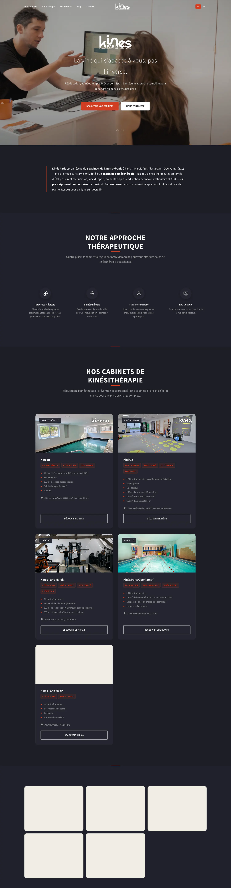
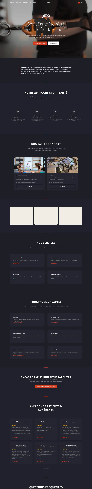
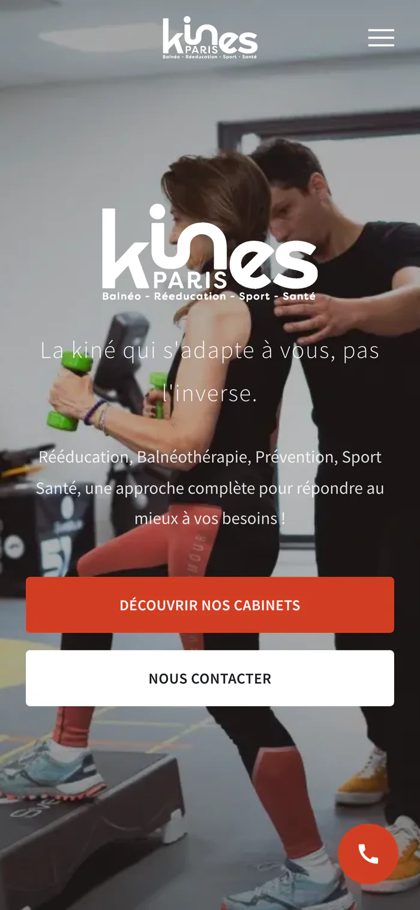

Kinés Paris & Maison du Peps
Sept établissements, deux marques, cent pages : rendre chaque adresse trouvable sans diluer le nom.
Le site.
kinesparis.fr — le site des cinq cabinets. La capture défile toute seule.

Le point de départ.
Jean-Charles Laporte dirige cinq cabinets de kinésithérapie et deux salles de sport-santé à Paris et dans le Val-de-Marne, avec 51 praticiens répartis entre les établissements. Chaque adresse vivait sur sa propre fiche Google et son propre agenda Doctolib, sans site capable de capter les recherches locales ni les recherches par pathologie — « balnéothérapie Le Perreux », « rééducation périnéale Paris », « salle de sport senior ». Il fallait aussi séparer nettement les deux marques, le soin remboursé d'un côté et le sport-santé de l'autre, tout en les faisant se renvoyer des patients.
« La kiné qui s'adapte à vous, pas l'inverse. »
Extrait du site kinesparis.fr
Ce que j'ai fait.
- Construit deux sites HTML statiques distincts : kinesparis.fr (62 pages au sitemap) et maisondupeps.com (38 pages), sans CMS ni framework.
- Créé une page par établissement — sept au total — avec adresse, horaires, coordonnées GPS et lien vers le bon agenda Doctolib, plus cinq pages équipe par cabinet.
- Écrit et publié 46 articles de blog, organisés par pathologie côté kiné et par public côté salle de sport.
- Balisé 51 fiches praticiens en Person avec spécialité et diplômes, et le réseau entier en LocalBusiness, MedicalBusiness, Physiotherapy et GymOrFitnessCenter.
- Mis en place des avis Google pré-rendus au build par un script Python, puis rafraîchis en JavaScript : ils restent lisibles par les moteurs même sans exécution du JS.
- Livré une version anglaise complète (14 pages sur kinesparis.fr, 6 sur maisondupeps.com), avec hreflang fr/en/x-default sur les 99 pages.
- Ouvert le site aux moteurs génératifs : llms.txt et llms-full.txt sur les deux domaines, et 16 crawlers IA autorisés nommément dans robots.txt.
- Interconnecté les deux marques : 326 renvois des cabinets vers les salles, 379 dans l'autre sens.
En chiffres.
Tous ces chiffres ont été relevés sur les sites en ligne : sitemaps recomptés, JSON-LD extrait page par page, balises vérifiées une à une.
La direction artistique.
Un fond anthracite très sombre traversé par un seul orange brique, réservé aux titres forts, aux boutons et aux chiffres clés : aucune autre couleur d'accent, donc aucun appel à l'action qui se noie. Les deux marques partagent exactement la même feuille de style — le style.min.css de kinesparis.fr et celui de maisondupeps.com ont le même MD5, au bit près. Un seul système de design piloté par variables CSS, deux identités.


L'histoire.
Jean-Charles gère cinq cabinets de kiné et deux salles de sport, 51 praticiens, sept établissements. Le vrai sujet n'était pas de faire un joli site : c'était de rendre chaque adresse trouvable sur sa propre requête, sans diluer la marque. J'ai donc construit deux sites séparés qui partagent une seule feuille de style — le même fichier, au bit près — et je les ai fait se renvoyer des patients : les cabinets envoient vers les salles, les salles renvoient vers les kinés. Ensuite j'ai écrit : 46 articles, plus de 150 000 mots, 524 questions balisées en FAQ. Le SEO et le GEO, je continue de les suivre chaque mois. Côté analytics du client, les deux sites cumulent plus de 4 000 visites mensuelles six mois après la mise en ligne.
Causons.
Un site à construire, un référencement à reprendre, ou simplement une question technique : je réponds vite, et toujours en personne.
M'écrire un mot →